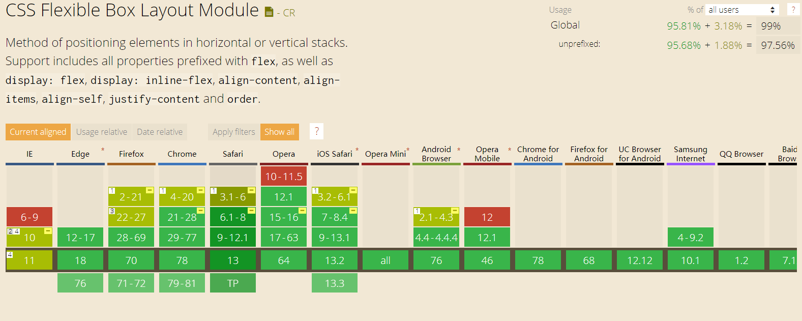
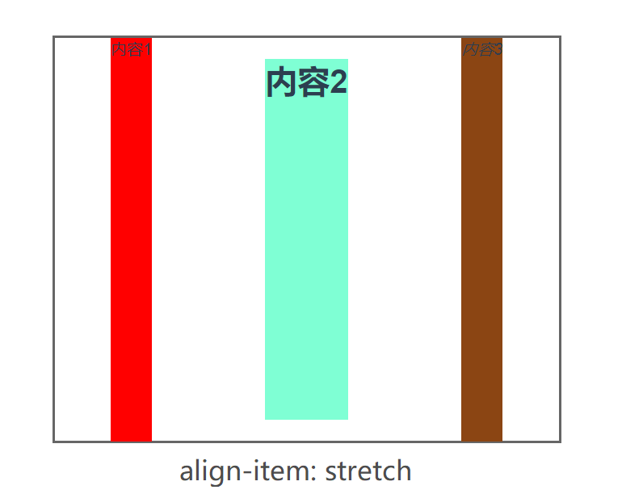
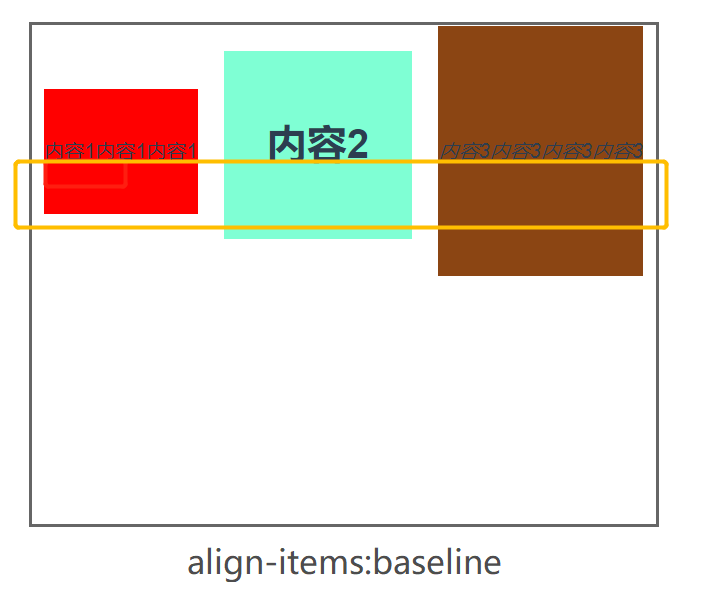
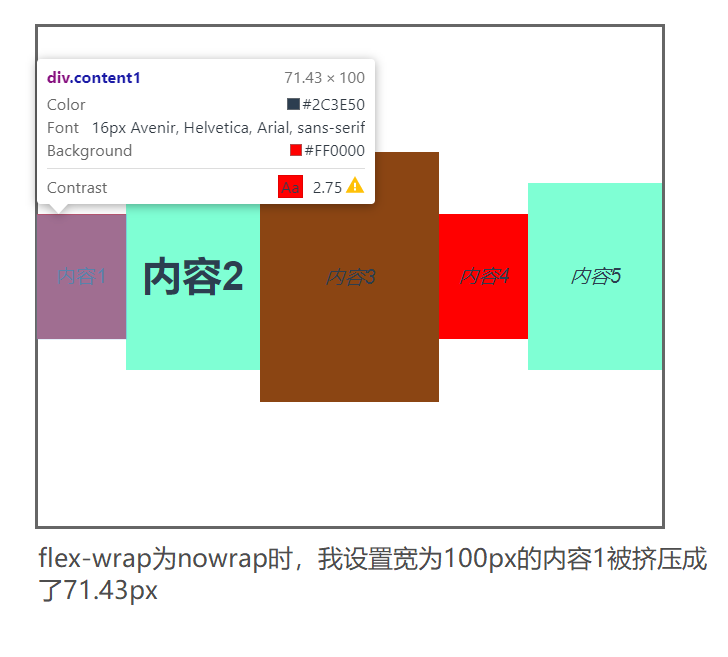
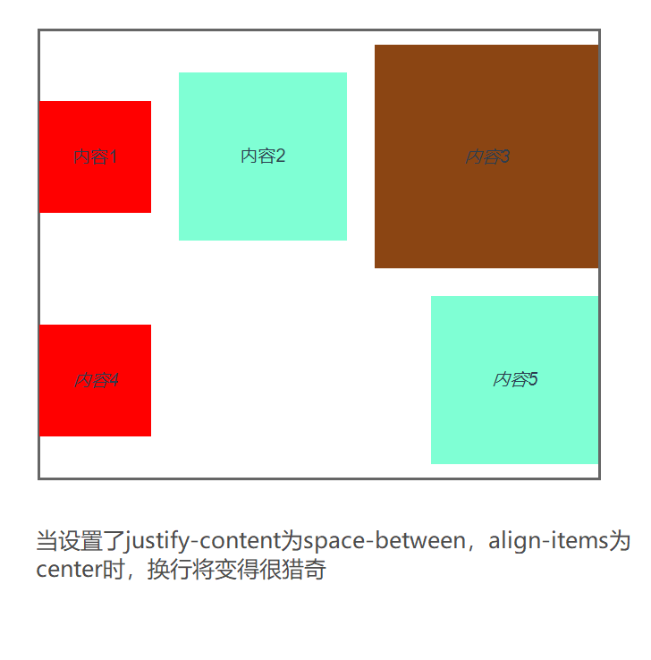
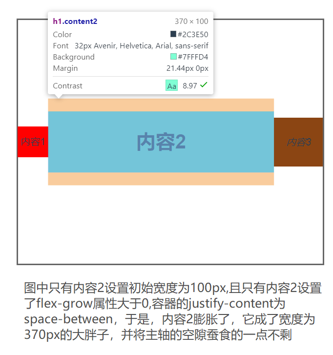
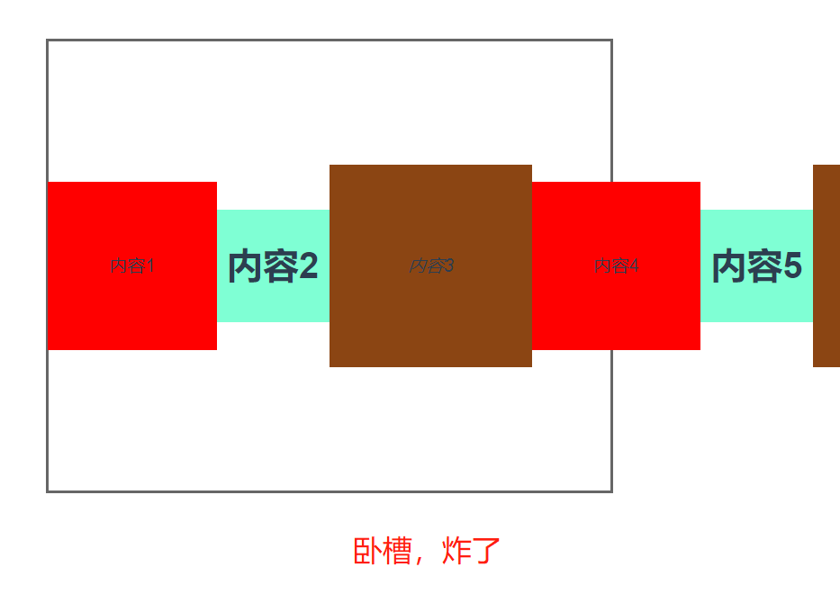

flex布局绝对是我们平常在布局中用的最多的一个属性，我们来看看它在can i use中的浏览器支持度：（截止到2019/11/16）

挖藕，凹森！支持度居然这么好，好到连ie也能支持大部分的flex布局的属性，那接下来我们就看看它的三大招式吧。
基本概念
任何一个元素，无论块级元素还是行内元素，都可以设置为flex容器，接下来都简称为“容器”，块级元素设置display: flex，行内元素设置display: inline-block。
元素一旦设置成为flex容器，其向下的第一级子元素将自动变成flex项目，接下来简称“项目”，并强制附上inline-block属性，同时项目的float、vertical-align、clear属性将全部失效。
容器默认有两根轴，一根主轴，一根副轴。主轴的默认方向为水平方向。
容器属性
1，flex-direction。定义主轴的方向，默认为row，即横向排列。可设置为column，表示纵向排列；
2，justify-content。定义项目在主轴上的排列方式，默认值为flex-start，可取值flex-start | flex-end | center | space-between | space-around。还有一个space-evenly，但这个属性不建议使用，因为它的支持度不高，尤其是移动端设备；
3，align-items。定义项目在副轴上的对齐方式，默认值为stretch。可能取值 flex-start | flex-end | center | stretch | baseline。着重说一下后两个，如果项目没有设置固定高度的话，stretch属性将把这个子项目拉长至充满整个高度,当然如果设置了项目的固定高度,那这个属性并不能起到什么作用。而baseline就厉害了，它会去取每个项目的第一行文字，无论文字大小，将基于文字底部对齐。


4，flex-wrap。定义项目在轴线上排不下的时候是否进行换行。默认值为nowrap。当设置为wrap时，将优先保证自身宽度，


这里并未列出一些例如flex-flow这样的组合属性，以及类似wrap-reverse这种冷门的取值，基本上flex容器理解这四个属性，已经可以满足绝大部分的布局需求。
项目属性
1，flex-grow。"grow"是成长的意思，flex-grow定义项目在容器存在多余空间时，是否放大自己。默认为0，表示不放大。如果有好几个项目设置了flex-grow属性大于0，则它们将根据flex-grow的比例蚕食剩余空间。

哟，这不就是当年那个所谓的圣杯双飞翼布局吗？？现在实现起来真是廉价。
2，flex-shrink。定义项目在容器空间不足时是否缩小，默认值为1，即会缩小，0表示不肯缩小。那要是它喵的个个的flex-shrink都为0，又不换行，内容又多，会出现什么情况呢，那就是会超出。

3，flex-basis。定义项目在放入容器前的初始宽度，默认值为auto，即项目本身的大小。可以设置具体的像素，当width和flex-basis同时存在时，flex-basis的优先级将高于width。
但是这个属性很制杖，看了很多文章，flex-shrink做的事跟width做的事完全一样，所以我认为这算一个冗余属性。
4，align-self。表示项目单独搞特殊化，其属性值将覆盖父元素设置的align-items值，取值与align-items的取值完全一致。
5，组合属性flex：它是"膨胀，萎缩，初宽"的简写，即flex-grow + flex-shrink + flex-basis。默认值为0 1 auto。它有两个快捷值：auto(1 1 auto)表示等比例伸缩，以及none(0 0 auto)表示无论如何都不伸缩。